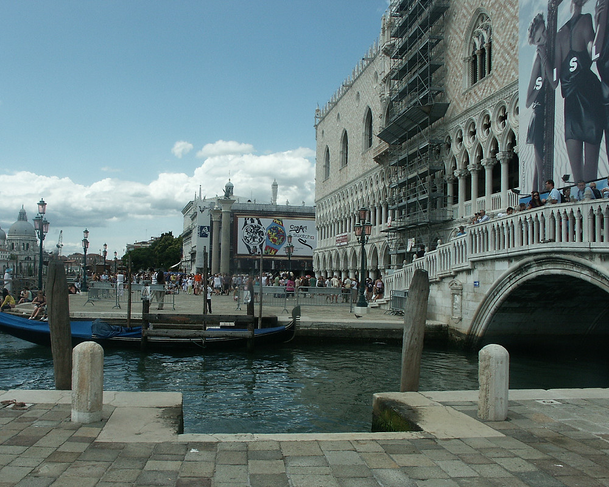

Johnnie and Oberta Baker's Photo Album Previous Gallery Next
|

The pinkish building is the Doge's Palace.The Doge was the military leader, duke, chief magistrate and leader of the "Republic of Venice" for over a thousand years. Doges of Venice were elected for life by the city-state's aristocracy. Commonly the person selected as Doge was the shrewdest elder in the city. The Venetian government was a combination of elaborate monarchic pomp and a republican constitution with intricate checks and balances, |